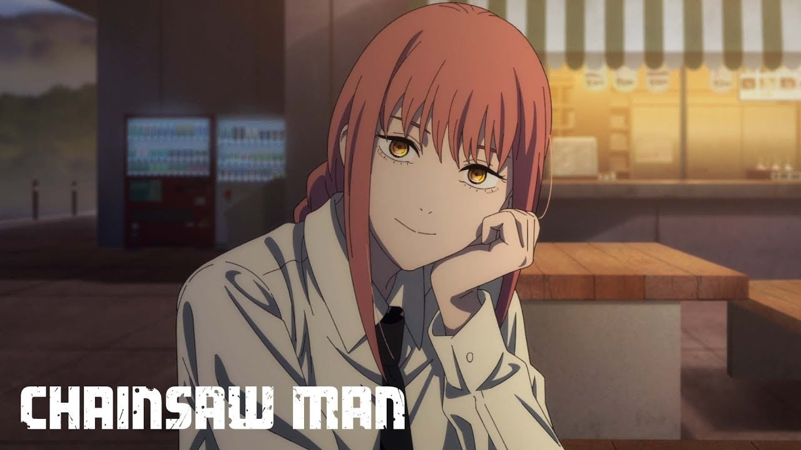

Story of Makima...🦋

Makima commands Denji and Power to patrol and search for a devil. After Power recklessly kills the Sea Cucumber Devil, Makima goes to the place where she killed that devil. Then, she tells Denji and Power about the consequences of killing a devil which was already being searched by the police pointing out that they should receive a punish for what happened, being in this case death sentence, however she decides to make a blind eye and pretend they didn't break the rules giving the two of them a warning so they can behave better and then leaves.
Makima states Aki became more flexible
Makima states Aki has become more flexible.
VIEW IMAGE
Later that night, Makima is in her office hearing the report of Aki Hayakawa about the defeat Bat and Leech Devils that afternoon. Before he leaves, Makima states that Aki has become more flexible, something that he denies. The next day in the morning Makima has a phone call and tells Aki that from now on Power will stay at his place and live with them.
Makima biting Denji's finger
Makima biting Denji's finger.
VIEW IMAGE
At the HQ, Makima asks Denji to do some paperwork. She notices him distracted while filling the papers and asks him if something has him worried. Right after hearing Denji's concern, Makima approaches and bites one of his fingers and makes him touch her chest. Then she motivates Denji to hunt the Gun Devil by promising to grant him any wish. She then commands Division 4 to kill the Eternity Devil and retrieve the piece of the Gun Devil's flesh in its possession.
Makima is one of the main characters in the first arc of Chainsaw Man. Early in the story, we learn that she is a senior member of the Public Safety Devil Hunters and leader of an experimental unit Tokyo Special Division 4.
This leads us to her first appearance, where she finds Denji after he first transforms into the Chainsaw Man (first anime episode) and offers him to join her squad. To Denji, Makima appears to be the most caring and friendly person in his life, the first one to treat him as a human. He even develops romantic feelings for her right after their first encounter.
Makima commands Denji and Power to patrol and search for a devil. After Power recklessly kills the Sea Cucumber Devil, Makima goes to the place where she killed that devil. Then, she tells Denji and Power about the consequences of killing a devil which was already being searched by the police pointing out that they should receive a punish for what happened, being in this case death sentence, however she decides to make a blind eye and pretend they didn't break the rules giving the two of them a warning so they can behave better and then leaves. Makima states Aki became more flexible Makima states Aki has become more flexible. VIEW IMAGE Later that night, Makima is in her office hearing the report of Aki Hayakawa about the defeat Bat and Leech Devils that afternoon. Before he leaves, Makima states that Aki has become more flexible, something that he denies. The next day in the morning Makima has a phone call and tells Aki that from now on Power will stay at his place and live with them. Makima biting Denji's finger Makima biting Denji's finger. VIEW IMAGE At the HQ, Makima asks Denji to do some paperwork. She notices him distracted while filling the papers and asks him if something has him worried. Right after hearing Denji's concern, Makima approaches and bites one of his fingers and makes him touch her chest. Then she motivates Denji to hunt the Gun Devil by promising to grant him any wish. She then commands Division 4 to kill the Eternity Devil and retrieve the piece of the Gun Devil's flesh in its possession.